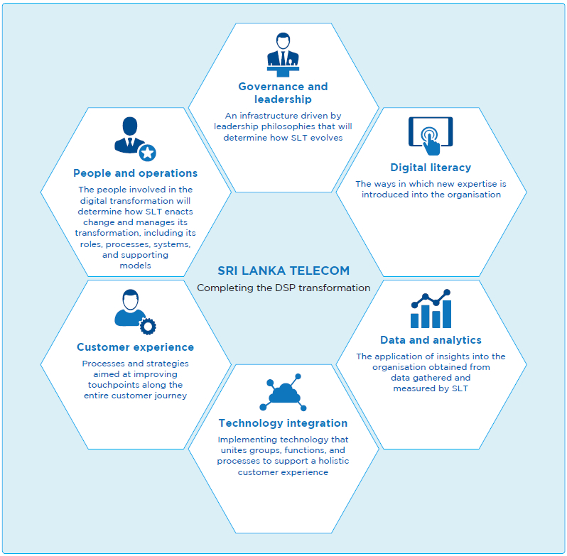

Our Strategy


The global economy is currently undergoing a digital transformation, with the telecommunication industry at the heart of it. By laying out the fundamental infrastructure that will go on to fuel change, innovation, and growth, telecom operators shoulder a large amount of responsibility towards ensuring the continued economic growth of the countries and communities they operate in. As the national ICT solutions provider of Sri Lanka, SLT has recognised the role it must play and embarked on a transformational journey. The SLT Group Vision 2022 was initiated in 2017 to transition the Group from a communications service provider (CSP) to a digital service provider (DSP) with the goal of becoming the nation’s preferred digital lifestyle provider by 2022.
Aligning SLT’s vision with the national vision
The Government of Sri Lanka (GoSL) launched its vision 2025 initiative which aims to bring about reforms to help the country become more prosperous. The national vision recognises that in order to boost the country’s global competitiveness, it needs to look beyond its borders in order to ensure sustainable long-term growth. The national vision, then, seeks to create a knowledge-based, highly competitive social market economy that can lead Sri Lanka to become the hub of the Indian ocean. The country will achieve this vision by developing strategies that encourage digitalisation and the adoption of emergent technologies to become competitive on a global level and thus nurture a digitally empowered economy in the nation. Enhanced digital ecosystems will stimulate inclusive growth and job creation through reduced transaction costs and empowering the self-employed and small and medium enterprises (SMEs).
SLT is committed to its role as the national ICT solutions provider to help the GoSL transform Sri Lanka into a digital economy. SLT supports the Government through deploying sophisticated telecommunications infrastructure and cutting-edge technology across the island that are vital to stimulating innovation, efficiency, and economic growth. We have partnered with the GoSL on several national and strategic projects in many capacities ranging from exclusive telecommunication infrastructure provider to ICT solutions provider in all sectors, including infrastructure development, health, education, and transport.
Strategic imperatives and strategies
SLT’s strategies evolve around balanced scorecard principles that emphasise financial and non-financial goals to achieve organisational growth while improving the return on investment for shareholders, protecting the interests of our stakeholders – particularly our customers and employees, and being a responsible corporate citizen.
We have grown our revenue through increased market penetration, market development, and expanding our market presence across the island. We have improved our coverage and capacity through accelerated fibre deployment projects and Long-Term Evolution (LTE) network expansion projects. In 2018, we focused our efforts around becoming a more customer centric organisation; customer centricity is now a key driving force for all activities. Our regional operational and sales teams have been developed and empowered to meet customer requirements in a timely manner. We renewed our efforts towards maximising customer service excellence to manage churn and win back customers and have backed our efforts through the introduction of a new customer relationship management (CRM) system and digital applications aimed at improving customer relations.
Improving our performance efficiency to achieve operational excellence is vital to the success of our strategies. To accomplish this, we have set about automating processes, encourage our employees to develop solutions to automate processes/reduce process times, and restructured the organisation to increase customer interaction through new Teleshops, outside plant maintenance centres, regional telecommunications offices, and franchised entities.
Transformation into a digital service provider

Performance of our strategy in 2018
SLT recorded remarkable year-on-year growth in 2018. Through our increased efforts to provide world-class services to local enterprises at attractive, competitive rates, we have grown our SME and Enterprise lines of business. We have improved our global presence by establishing strategic partnerships with international enterprises, which has enabled us to provide novel services and experiences to local business entities.
The retail sector has also experienced growth in the face of intense competition from domestic mobile operators. Our broadband solutions that span the range of copper, fibre, and wireless technologies have attracted households as a result of affordable packages that cater to the needs of all family members. We continue to grow the PEO TV platform to provide new and unique experiences to subscribers; several new educational and entertainment channels were introduced during the year, adding to the platform’s product portfolio and increasing its edu-infotainment value. The result has been that SLT’s range of voice, broadband, and pay-TV services have reached nearly 2 Mn. subscriptions. Broadband subscriptions increased by 20% over the previous year and we have maintained our voice subscriptions, even though global trends indicate declining demand for voice services.
Our evolving strategy
Disruptive technologies are altering the ICT ecosystem, leading to new trends emerging in communication, how business is done, and lifestyles, and bringing along new opportunities. Some of the global trends that have been observed in recent times include the emergence of Internet of Things (IoT) and machine-to-machine (M2M) communication, cryptocurrencies, blockchain technology, service-bots, visual-voice search, and artificial intelligence. Our domestic market is not immune to these global trends; the manufacturing, financial services, and BPO service sectors are adapting quickly to the rapidly changing digital ecosystem.
Our “fibre everywhere” strategy is one of the key strategies that we perceive to be essential to catering to new market conditions. The rise in smartphone penetration rates and smart TVs have created opportunities for technologies such as fast-backhauling and carrier-grade Wi-Fi facilities. We can leverage our fibre connectivity through aggressive consumer market penetration, introducing digital services, managing churn, and launching new solutions for SMEs. The increase in the digital literacy of citizens will see growth opportunities for fixed broadband and demand for digital services will support this strategy.
SLT’s efforts cannot rest solely on providing the technology or infrastructure. We see ourselves playing a key role as enablers of the digital lifestyles of our customers and business entities, and therefore we need to facilitate the digital journey that they seek to experience. The exponential growth in connected devices has led to big data becoming a unique resource for companies. Our next key strategy will see us utilising big data to craft digital products, services, and solutions that will further facilitate our digital journey and that of our customers.
Our third key strategy is to complete our digital transformation through new apps, process automation, and innovation; without our digital transformation, we will not be able to realise any of our strategies. Operational excellence through a KPI-driven culture, dynamic insights-driven approach with employee empowerment, and excellent project management will be driven through the digital transformation of SLT.